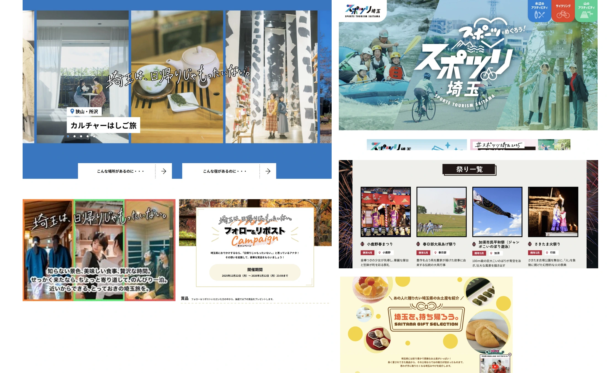

観光 / 埼玉
ちょこたび各種コンテンツ企画・運用


PROJECT INFORMATION
公式サイトを見る ↗（新しいタブで開く）埼玉県物産観光協会「ちょこたび」のLP・キャンペーン運用。埼玉の観光情報を届けるWeb上の接点を担当しています。
01 / 背景とテーマ
輪郭を与える
つくって終わりのキャンペーンにしないこと。ちょこたび埼玉の各企画を、年度をまたいで積み上がる仕組みとして運用してきました。
02 / SCHEMAの担当範囲
全体を整える
SCHEMAは11本のランディングページと横断企画を通しで管理し、広告配信の設計から運用までを担当。前年度の実績を引き継いで改善していく形で回しています。
03 / 取り組みの視点
枠組みをひらく
キャンペーンごとの結果を次の企画の材料にする。単発の施策を、続けるほど精度が上がる運用へと組み替えています。